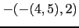
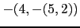
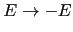
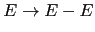

Sig: Conceptos Básicos Sup: Análisis Sintáctico Ascendente en Ant: Análisis Sintáctico Ascendente en Con:
Parse::Yapp no viene con la distribución de Perl, por lo que es necesario
bajarlo desde CPAN, en la dirección
http://search.cpan.org/~fdesar/Parse-Yapp-1.05/lib/Parse/Yapp.pm
o bien en nuestros servidores locales, por ejemplo en el mismo directorio en que se guarda la versión HTML de estos apuntes encontrará una copia de Parse-Yapp-1.05.tar.gz. La versión a la que se refiere este capítulo es la 1.05.
Para ilustrar su uso veamos
un ejemplo en el que se genera una sencilla calculadora numérica.
Los contenidos del programa yapp los hemos guardado
en un fichero denominado Calc.yp
(el código completo figura en el apéndice
en la página ![[*]](crossref.png) )
)
1 # 2 # Calc.yp 3 # 4 # Parse::Yapp input grammar example. 5 # 6 # This file is PUBLIC DOMAIN 7 # 8 #Se pueden poner comentarios tipo Perl o tipo C (
/* ... */)
a lo largo del fichero.
9 %right '='
10 %left '-' '+'
11 %left '*' '/'
12 %left NEG
13 %right '^'
14
15 %%
16 input: #empty
17 | input line { push(@{$_[1]},$_[2]); $_[1] }
18 ;
las declaraciones %left y %right expresan la asociatividad
y precedencia de los terminales, permitiendo decidir que árbol construir
en caso de ambiguedad.
Los terminales declarados en líneas
posteriores tienen mas prioridad que los declarados en las líneas anteriores.
Véase la sección 9.7 para mas detalles.
Un programa yapp consta de tres partes: la cabeza, el cuerpo
y la cola. Cada una de las partes va separada de las otras por el
símbolo %% en una línea aparte. Así, el %% de la línea 15
separa la cabeza del cuerpo. En la cabecera se colocan el
código de inicialización, las declaraciones de terminales, las reglas
de precedencia, etc. El cuerpo contiene las reglas de la gramática y
las acciones asociadas. Por último, la cola de un program yapp
contiene las rutinas de soporte al código que aparece en las acciones
asi como, posiblemente, rutinas para el análisis léxico
y el tratamiento de errores.
En Parse::Yapp las acciones son convertidas en subrutinas
anónimas. Mas bien en métodos anónimos.
Así pues el primer argumento de la subrutina se identifica con
una referencia al analizador ($_[0]). Los restantes parámetros
se corresponden con los atributos de los símbolos
en la parte derecha de la regla de producción ($_[1] ...).
Por ejemplo, el código en la línea 21 imprime el atributo asociado
con la variable sintáctica expr, que en este caso es su valor numérico.
La línea 17 indica que el atributo asociado con la variable
sintáctica input es una referencia
a una pila y que el atributo asociado con la variable sintáctica
line debe empujarse
en la pila. De hecho, el atributo asociado con line es el valor
de la expresión. Asi pues el atributo retornado por input es
una referencia a una lista conteniendo los valores de las expresiones
evaluadas.
Para saber mas sobre las estructuras internas de
yapp para la representación de las acciones asociadas con las reglas
véase la sección 9.4.
19
20 line: '\n' { 0 }
21 | exp '\n' { print "$_[1]\n"; $_[1] }
22 | error '\n' { $_[0]->YYErrok; 0 }
23 ;
El terminal
error en la línea 22 esta asociado con la aparición de un error.
El tratamiento es el mismo que en yacc. Cuando se produce un error
en el análisis, yapp emite un mensaje de error y
produce ``mágicamente'' un terminal especial denominado
error. A partir de ahí permanecerá silencioso,
consumiendo terminales hasta encontrar uno de los terminales que le
hemos indicado en las reglas de recuperación de errores,
en este caso, cuando encuentre un retorno de carro.
Como se ha dicho, en Parse::Yapp el primer argumento de la acción denota al
analizador sintáctico. Así pues el código $_[0]->YYErrok
es una llamada al método YYErrok del analizador. Este método
funciona como la macro yyerrok de yacc, indicando
que la presencia del retorno del carro (\n) la podemos considerar
un signo seguro de que nos hemos recuperado del error. A partir
de este momento, yapp volverá a emitir mensajes de error.
Para saber más sobre la recuperación de
errores en yapp léase la sección
9.15.
24 25 exp: NUMLa acción por defecto es retornar
$_[1].
Por tanto, en este caso el valor retornado es el asociado a NUM.
26 | VAR { $_[0]->YYData->{VARS}{$_[1]} }
El método YYData provee acceso a un hash que contiene los datos
que están siendo analizados. En este caso creamos una entrada
VARS que es una referencia a un hash en el que guardamos las
variables. Este hash es la tabla de símbolos de la calculadora.
27 | VAR '=' exp { $_[0]->YYData->{VARS}{$_[1]}=$_[3] }
28 | exp '+' exp { $_[1] + $_[3] }
29 | exp '-' exp { $_[1] - $_[3] }
30 | exp '*' exp { $_[1] * $_[3] }
Hay numerosas ambiguedades en esta gramática. Por ejemplo,
4 - 5 - 2?
¿Como (4 - 5) - 2? ¿o bien 4 - (5 - 2)?
La respuesta la da la asignación de asociatividad a los operadores
que hicimos en las líneas 9-13.
Al declarar como asociativo a izquierdas al terminal -
(línea 10) hemos
resuelto este tipo de ambiguedad. Lo que estamos haciendo es
indicarle al analizador que a la hora de elegir entre
los árboles abstractos

y

elija siempre
el árbol que se hunde a izquierdas.
4 - 5 * 2?
¿Como (4 - 5) * 2? ¿o bien 4 - (5 * 2)?
Al declarar que * tiene mayor prioridad que - estamos
resolviendo esta otra fuente de ambiguedad. Esto es así pues
* fué declarado en la línea 11 y - en la 10.
31 | exp '/' exp {
32 $_[3]
33 and return($_[1] / $_[3]);
34 $_[0]->YYData->{ERRMSG}
35 = "Illegal division by zero.\n";
36 $_[0]->YYError;
37 undef
38 }
En la regla de la división comprobamos que el divisor es
distinto de cero. Si es cero inicializamos el atributo
ERRMSG en la zona de datos con el mensaje de
error apropiado. Este mensaje es aprovechado por la subrutina
de tratamiento de errores (véase la subrutina _Error
en la zona de la cola). La subrutina _Error es llamada
automáticamente por yapp cada vez que ocurre un error
sintáctico. Esto es asi por que en la llamada
al analizador se especifican quienes son las diferentes
rutinas de apoyo:
my $result = $self->YYParse( yylex => \&_Lexer,
yyerror => \&_Error,
yydebug => 0x0 );
Por defecto, una regla de producción
tiene la prioridad del último terminal que aparece
en su parte derecha.
Una regla de producción puede ir seguida de una directiva
%prec la cual le da una prioridad explícita.
Esto puede ser de gran ayuda en ciertos casos de
ambiguedad.
39 | '-' exp %prec NEG { -$_[2] }
¿Cual es la ambiguedad que surge con esta regla?
Una de las ambiguedad de esta regla
esta relacionada con el doble significado
del menos como operador unario y binario: hay frases
como -y-z que tiene dos posibles interpretaciones:
Podemos verla como (-y)-z o bien como -(y-z).
Hay dos árboles posibles. El analizador, cuando este analizando
la entrada -y-z y vea el
segundo - deberá escoger uno de los dos árboles.
¿Cuál?. El conflicto puede verse como una ``lucha'' entre
la regla exp: '-' exp la cual interpreta la frase como
(-y)-z y la segunda aparición del terminal -
el cuál ``quiere entrar'' para que gane la regla exp: exp '-' exp
y dar lugar a la interpretación -(y-z).
En este caso, las dos reglas

y

tienen, en principio
la prioridad del terminal -, el cual fué declarado en la
línea 10.
La prioridad expresada explícitamente
para la regla por la declaración %prec NEG de la línea
39 hace que la regla tenga la prioridad
del terminal NEG (línea 12) y por tanto mas prioridad
que el terminal -. Esto hará que yapp finalmente opte
por la regla exp: '-' exp.
La declaración de ^ como asociativo a derechas y con un nivel
de prioridad alto resuelve las ambiguedades relacionadas
con este operador:
40 | exp '^' exp { $_[1] ** $_[3] }
41 | '(' exp ')' { $_[2] }
42 ;
Después de la parte de la gramática, y separada de la anterior
por el símbolo %%, sigue la parte en la que se
suelen poner las rutinas de apoyo. Hay al menos dos rutinas de apoyo que
el analizador sintáctico requiere le sean pasados como argumentos:
la de manejo de errores y la de análisis léxico. El método Run
ilustra como se hace la llamada al método de análisis sintáctico
generado, utilizando la técnica de llamada con argumentos con nombre
y pasándole las referencias a las dos subrutinas (en Perl,
es un convenio que si el nombre de una subrutina comienza
por un guión bajo es que el autor la considera privada):
...
sub Run {
my($self)=shift;
my $result = $self->YYParse( yylex => \&_Lexer,
yyerror => \&_Error,
yydebug => 0x0 );
my @result = @$result;
print "@result\n";
}
La subrutina de manejo de errores _Error imprime
el mensaje de error proveído por el usuario, el cual, si existe, fué guardado en
$_[0]->YYData->{ERRMSG}.
43 # rutinas de apoyo
44 %%
45
46 sub _Error {
47 exists $_[0]->YYData->{ERRMSG}
48 and do {
49 print $_[0]->YYData->{ERRMSG};
50 delete $_[0]->YYData->{ERRMSG};
51 return;
52 };
53 print "Syntax error.\n";
54 }
55
A continuación sigue el método que implanta
el análisis léxico _Lexer.
En primer lugar se comprueba la existencia de
datos en parser->YYData->{INPUT}. Si no es el caso, los datos
se tomarán de la entrada estándar:
56 sub _Lexer {
57 my($parser)=shift;
58
59 defined($parser->YYData->{INPUT})
60 or $parser->YYData->{INPUT} = <STDIN>
61 or return('',undef);
62
Cuando el analizador léxico alcanza el final de la entrada
debe devolver la pareja ('',undef).
Eliminamos los blancos iniciales (lo que en inglés se conoce por trimming):
63 $parser->YYData->{INPUT}=~s/^[ \t]//;
64
A continuación vamos detectando los números, identificadores
y los símbolos individuales. El bucle for ($parser->YYData->{INPUT})
se ejecuta mientras la cadena
en $parser->YYData->{INPUT} no sea vacía, lo que ocurrirá cuando todos
los terminales hayan sido consumidos.
65 for ($parser->YYData->{INPUT}) {
66 s/^([0-9]+(?:\.[0-9]+)?)//
67 and return('NUM',$1);
68 s/^([A-Za-z][A-Za-z0-9_]*)//
69 and return('VAR',$1);
70 s/^(.)//s
71 and return($1,$1);
72 }
73 }
$parser->YYData->{INPUT} se
ve modificado si no aparece como variable para el binding en las líneas 66, 68 y 70?
Construimos el módulo Calc.pm a partir del fichero Calc.yp
especificando la gramática, usando un fichero Makefile:
> cat Makefile
Calc.pm: Calc.yp
yapp -m Calc Calc.yp
> make
yapp -m Calc Calc.yp
Esta compilación genera el fichero Calc.pm conteniendo el
analizador:
> ls -ltr total 96 -rw-r----- 1 pl users 1959 Oct 20 1999 Calc.yp -rw-r----- 1 pl users 39 Nov 16 12:26 Makefile -rwxrwx--x 1 pl users 78 Nov 16 12:30 usecalc.pl -rw-rw---- 1 pl users 5254 Nov 16 12:35 Calc.pm
El script yapp es un frontend al módulo Parse::Yapp.
Admite diversas formas de uso:
El sufijo .yp es opcional.
Nos muestra la versión:
$ yapp -V This is Parse::Yapp version 1.05.
Nos muestra la ayuda:
$ yapp -h
Usage: yapp [options] grammar[.yp]
or yapp -V
or yapp -h
-m module Give your parser module the name <module>
default is <grammar>
-v Create a file <grammar>.output describing your parser
-s Create a standalone module in which the driver is included
-n Disable source file line numbering embedded in your parser
-o outfile Create the file <outfile> for your parser module
Default is <grammar>.pm or, if -m A::Module::Name is
specified, Name.pm
-t filename Uses the file <filename> as a template for creating the parser
module file. Default is to use internal template defined
in Parse::Yapp::Output
-b shebang Adds '#!<shebang>' as the very first line of the output file
grammar The grammar file. If no suffix is given, and the file
does not exists, .yp is added
-V Display current version of Parse::Yapp and gracefully exits
-h Display this help screen
La opción -m module da el nombre al paquete o espacio de nombres o clase encapsulando el analizador. Por defecto toma el nombre de la gramática. En el ejemplo podría haberse omitido.
La opción -o outfile
da el nombre del fichero de salida. Por defecto toma el nombre de la gramática,
seguido del sufijo .pm. sin embargo, si hemos especificado la opción
-m A::Module::Name el valor por defecto será Name.pm.
Veamos los contenidos del ejecutable usecalc.pl el cuál
utiliza el módulo generado por yapp:
> cat usecalc.pl #!/usr/local/bin/perl5.8.0 -w use Calc; $parser = new Calc(); $parser->Run;Al ejecutar obtenemos:
$ ./usecalc3.pl 2+3 5 4*8 32 ^D 5 32Pulsamos al final
Ctrl-D para generar el final de fichero.
El analizador devuelve la lista de valores computados la cual es
finalmente impresa.
¿En que orden ejecuta YYParse las acciones?
La respuesta es que el analizador generado por
yapp construye una derivación a derechas
inversa y ejecuta las acciones asociadas a las reglas de producción
que se han aplicado. Así, para la frase 3+2 la antiderivación es:
por tanto las acciones ejecutadas son las asociadas con las correspondientes reglas de producción:
25 exp: NUM { $_[1]; } # acción por defecto
Esta instancia de exp tiene ahora como atributo 3.
25 exp: NUM { $_[1]; } # acción por defecto
Esta nueva instancia de exp tiene como atributo 2.
28 | exp '+' exp { $_[1] + $_[3] }
La nueva instancia (nodo) exp tiene como atributo 5 = 3 + 2.
E(3)
/ | \
(1)E + E(2)
/ \
NUM NUM
Los números entre paréntesis indican el orden de visita de las producciones.